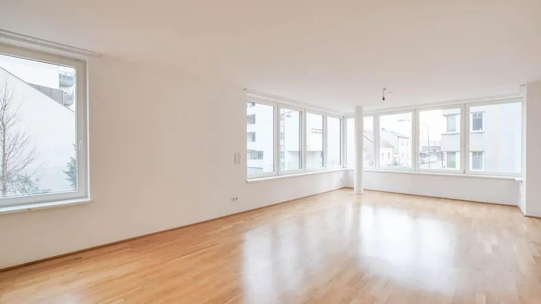
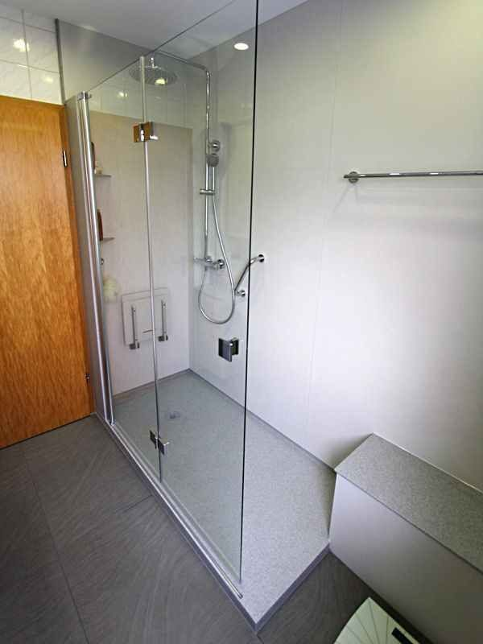

Unsere Dienste
Sechs Aufgaben, ein Ansprechpartner. Wählen Sie, was bei Ihnen ansteht — alles beginnt mit einer kostenlosen Besichtigung.

Entrümpelung & Wohnungsauflösung
Wohnung, Haus, Keller oder Dachboden komplett leeren — inklusive Wertanrechnung und besenreiner Übergabe.
Wohnung ab 900 € · Haus 2.500–6.000 €
Mehr dazu →
Nachlass- & Verkleinerungs-Service
Ein Haushalt wird aufgelöst oder verkleinert: Wir kümmern uns um alles — einfühlsam, diskret, mit einem Ansprechpartner.
2.500–8.000 € pro Fall
Mehr dazu →Senioren-Umzug & Haushaltsverkleinerung
Vom großen Haus in die kleinere Wohnung oder ins Heim — geplant, getragen und in Ruhe abgewickelt.
Festpreis nach kostenloser Besichtigung
Mehr dazu →
Haus verkaufsfertig machen
Räumung, Grundreinigung und kleine Reparaturen koordiniert — damit Ihr Haus beim Verkauf den besten Eindruck macht.
2.500–7.500 € pro Haus
Mehr dazu →
Wohnen bleiben: Umbau koordinieren
Bad, Schwellen, Haltegriffe: Wir koordinieren Ihren altersgerechten Umbau — die Pflegekasse fördert bis 4.180 €.
Unser Honorar: 990–2.400 €
Mehr dazu →Verkaufs-Service: Auto, Wohnmobil & Wertgegenstände
Sie wollen verkaufen, aber nicht selbst inserieren und verhandeln? Wir übernehmen den kompletten Verkauf für Sie.
499 € bis 15.000 € Wert · 999 € darüber
Mehr dazu →So einfach läuft es
- Kostenlose Besichtigung
Wir kommen vorbei, schauen uns alles an und besprechen, was zu tun ist — unverbindlich.
- Schriftlicher Festpreis
Sie bekommen einen festen Preis schriftlich. Verwertbares wird vorher angerechnet. Keine Überraschungen.
- 50 % Anzahlung, dann starten wir
Erst wenn die Anzahlung da ist, legen wir los — so ist es für beide Seiten verbindlich und fair.
- Besenreine Übergabe
Zum vereinbarten Termin ist alles erledigt und besenrein übergeben. Restzahlung erst bei Übergabe.